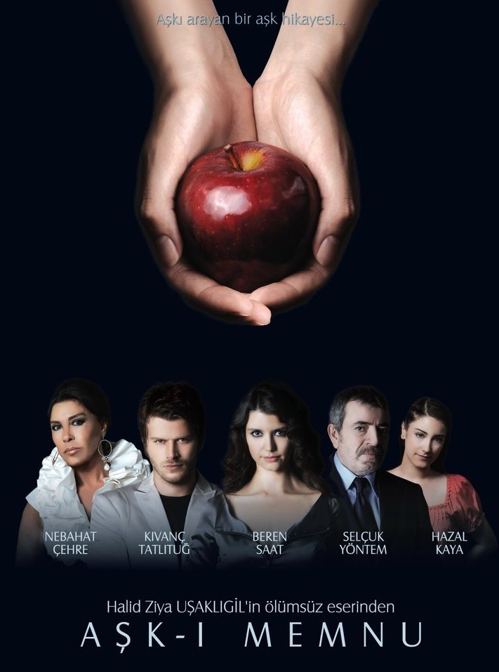
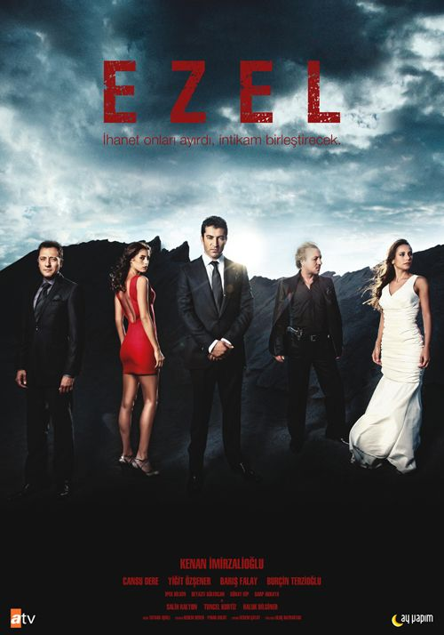

📺 TÜRK DİZİ DÜNYASI
En sevdiğin yerli dizilerin testlerini çöz, bilgini kanıtla!
DRAM

Aşk-ı Memnu

Ezel
Fatmagül'ün Suçu Ne?
İstanbullu Gelin
Öyle Bir Geçer Zaman Ki

Sen Anlat Karadeniz
AKSİYON & POLİSİYE

KOMEDİ & ROMANTİK KOMEDİ